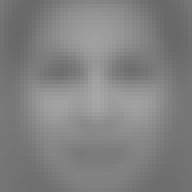
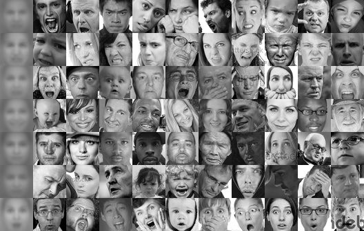

Model input (parity check)

FER2013 target
Left is the exact 48×48 grayscale crop the CNN receives. Right is the
average of all 25,841 FER2013 training faces — the framing the model was
trained on. Match the eye line and face width to it. Alignment puts the
eye midpoint at (0.50, 0.354) with an inter-ocular distance of 0.375×width,
which is that average measured directly.

Real training faces — rows: angry, disgust, fear, happy, neutral, sad,
surprise. Leftmost column is each class’s mean face.